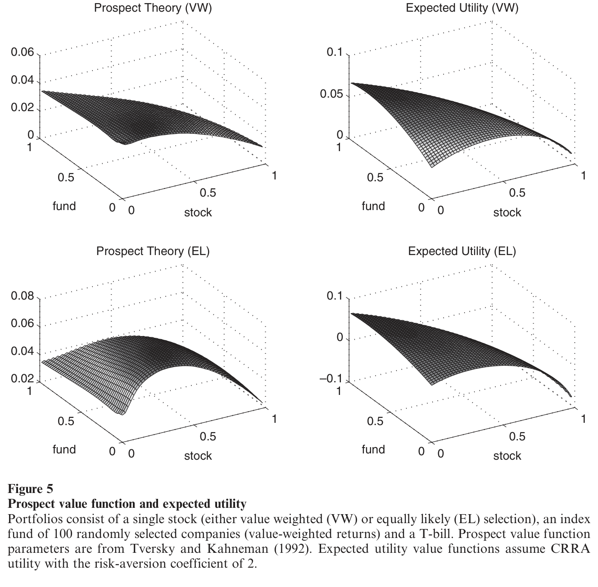
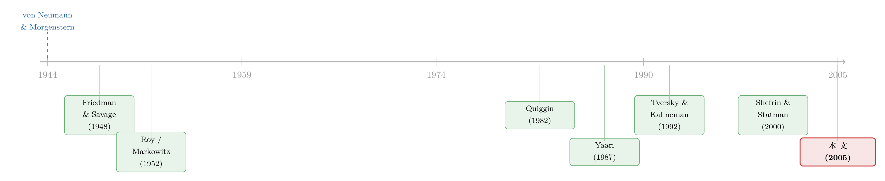

为什么有人一边买指数基金，一边死攥着两只股票？
本文读的是 Polkovnichenko (2005, Review of Financial Studies)：作者用美国 SCF 近二十年的家庭财富数据，记录下两个让期望效用理论张口结舌的现象——很多家庭一边持有分散良好的共同基金、一边把大笔钱压在两三只个股上；还有相当一批不算穷的家庭干脆一股不买。他证明，只要把「排序依赖偏好」（对小概率大收益的高估 + 一阶风险厌恶）放进组合选择模型，用实验文献里现成的参数，就能在数量上把这两件事同时算对。
1 一个本不该存在的组合
先讲一个所有金融学第一课都会教你的结论：在一个没有摩擦的世界里，理性投资者应该持有「市场组合」。要冒险，就按比例放大或缩小对这只分散组合的暴露；要稳妥，就多留点无风险资产。无论你多有钱、多怕风险，你都不该去重仓某两三只个股——那等于白白承担了一堆能被分散掉、却得不到补偿的特质风险。这是马科维茨 (Markowitz) 之后写进每一本教科书的常识。
可是翻开真实的家庭账本，你会撞见一幅完全不一样的图景。
作者用 Survey of Consumer Finances（消费者金融调查，下称 SCF）1983、1989、1992、1995、1998、2001 六个年份的横截面，盯着一件最朴素的事：美国家庭的钱，到底分不分散？他发现了两个又普遍、又顽固的「反常」：
第一，很多人同时干着两件矛盾的事——他们既买了分散良好的共同基金，又把可观的一笔财富压在极少数几只个股上。到 2001 年，全部直接持股者持有的不同公司股票数的中位数也才 3 只；而约 80% 的直接投资者，手里只有 5 家或更少公司的股票，约 90% 不到 10 家。分布的最左端更刺眼：每个年份都有 40% 以上的直接投资者，名下只有 一家 公司的股票。以 1998 年为例，约 75% 的直接投资者持股不超过 5 家，折算下来是全美约 14.2% 的人口、约 1400 万户家庭。
第二，一批并不穷的家庭，一股都不碰。在按流动金融资产分出的第 3 到第 5 组里（即 FA 在一万美元以上的人群），不参与股市的家庭常年占人口的 10% 到 16%。注意一个细节：每一组「不持股者」的财富中位数，都比下一组「持股者」更高。换句话说，你没法用「他们太穷、付不起参与成本」来打发这件事——钱不是问题。
这两个现象，单拎出来任何一个，期望效用 (expected utility, EU) 框架都很难解释。第一个违背的是分散原理，第二个违背的是「股权溢价为正、就该有人参与」的逻辑。作者要做的，是用同一套偏好把两件事一次讲通。
2 先堵死几条「省事」的解释
接着，一个自然的问题是：这会不会只是无知、或者被雇主股票绑架的结果？毕竟「员工持股」常被当成欠分散的元凶。
作者把数据掰开了给你看。平均约 7% 的家庭（约占直接持股者的 30%）持有雇主股票，它在欠富裕组里确实能占到组合的很大比例（最高到 100%）。但相对金融资产，雇主股票的占比从 1983 到 2001 年由 18% 一路降到 9%；而且即便把持有雇主股票的人剔掉，剩下的直接持股者依然人数众多。更关键的是，在 401(k) 和股票薪酬还远不普及的 1980 年代到 1990 年代初，欠分散现象就已经牢牢存在了。雇主股票是个配角，不是主角。
那么，会不会是投资者根本不知道单只股票有多危险？如果是「不懂」，那只要科普一下，他们就该去买分散组合。
作者于是做了一组回归来反驳「无知假说」。他用两个分散度指标当被解释变量：一是直接持股占总金融财富的比例 \(\big(\tfrac{\text{DIR}}{\text{FA}}\big)\)，二是直接持股占风险资产的比例 \(\big(\tfrac{\text{DIR}}{\text{RIS}}\big)\)——前者看投资者是否意识到个股相对整个财富的风险，后者看是否意识到个股相对其他风险资产的风险。结论很干脆：那些把更大比例财富押在个股上的家庭，恰恰是那些在其他维度上表现得更愿意承担风险的家庭。也就是说，他们清楚个股更危险，并且是在权衡了这份风险之后才这么配置的。
这就把球踢到了偏好这一侧：如果人们既不无知、也不是被雇主股票裹挟，那是不是他们的风险态度本身，就和期望效用假设的那一套不一样？
3 关键的一步：把「赌一把」写进偏好
但真正关键的一步在于：期望效用即便允许投资者偏好偏度 (skewness)，也无法自洽地解释上面两件事。这是作者花了大力气论证的一点，也是全文的枢纽。
为什么？因为在期望效用里，对风险的态度由效用函数 \(u(\cdot)\) 的曲率一次性决定。你要么整体偏好偏度（凸性带来对「正偏」的偏好），要么不偏好；很难让同一个人在核心仓位上保守、又在边缘仓位上博彩。而排序依赖偏好 (rank-dependent preferences) 提供的，恰恰是一种随概率变化的风险态度：对小概率的极端好结果高估、对中段概率低估——既能解释保险（高估小概率的灾难），又能解释买彩票（高估小概率的暴富）。
它的数学内核，是把期望里的「概率」换成「经过扭曲的累积概率」。设结果按大小排好序 \(x_1 \le x_2 \le \cdots \le x_n\)，对应概率 \(p_1, \ldots, p_n\)，引入一个概率加权函数 (probability weighting function) \(w(\cdot)\)（满足 \(w(0)=0,\ w(1)=1\)），则价值泛函为：
这个式子是理解全文的钥匙。它说：你对某个结果的重视程度 \(\pi_i\)，不取决于它本身发生的概率 \(p_i\)，而取决于它在所有结果里排第几、以及加权函数 \(w\) 如何对待它所处的那段累积概率。三个经典模型都是它的特例：
- Quiggin (1982) 的预期效用 (anticipated utility)：上式的原型，\(u\) 非线性、\(w\) 非线性。
- Yaari (1987) 的对偶选择理论 (dual theory of choice)：令 \(u(x)=x\)，把全部「弯曲」都交给 \(w\)——风险态度纯粹由概率加权决定。
- Tversky 和 Kahneman (1992) 的累积前景理论 (cumulative prospect theory, CPT)：在参考点两侧分别加权，并配上损失厌恶。其著名的加权函数是 $$w(p) = \frac{p^{\gamma}}{\big(p^{\gamma} + (1-p)^{\gamma}\big)^{1/\gamma}},$$ 当 \(\gamma < 1\)（实验估计约 \(\gamma \approx 0.61\)）时，\(w\) 呈倒 S 形：小概率被高估、中段概率被压低。
到这里，欠分散的故事就有了机制。一个分散组合的收益分布比较「居中、对称」；而一个押注两三只个股的欠分散组合，会有更高的正偏度——大部分时候表现平平，但保留了一条「小概率暴富」的尾巴。倒 S 形的 \(w\) 把那条尾巴的权重放大了，于是在排序依赖投资者眼里，欠分散组合反而更值钱。这正是 Friedman 和 Savage (1948) 当年说的、投资者想要「a shot at riches」（搏一把发财机会）的现代化表述。

Figure 5: illustrates the key driving force behind portfolio selection of
而非参与之谜，靠的是同一套偏好里的另一个性质：一阶风险厌恶 (first-order risk aversion)。在期望效用里，一个小赌注的风险溢价正比于其方差（二阶量），所以只要股权溢价为正，足够小的暴露总是划算的——人人都该参与一点点。但在排序依赖偏好里，由于 \(w\) 在端点附近不可微，小赌注的风险溢价正比于其标准差（一阶量）。这意味着：对足够厌恶风险的人，无论他多有钱，第一块钱进入股市的「心理代价」都不会随仓位缩小而快速消失。于是他选择干脆不参与。这一点正是 Epstein 和 Zin (1991) 用来攻击股权溢价之谜的同一把武器，也是 Segal 和 Spivak (1990) 区分一阶/二阶风险厌恶的核心。
把两件事连起来看：同一族偏好里，概率加权负责「想博彩、压个股」，一阶风险厌恶负责「干脆不进场」。参数往一个方向调，你得到欠分散；往另一个方向调，你得到非参与；中间地带，你得到「基金 + 个股」的并存。一套偏好，三种行为，这是期望效用做不到的。
4 不是定性「能解释」，而是定量「对得上」
然后，作者把话说得更硬。他没有停在「定性上讲得通」，而是直接做组合选择的模拟：用一段历史收益样本，对上面三个排序依赖模型分别求解最优组合，看看在「合理参数」下，模型吐出来的组合长什么样。
这里有两个值得强调的方法论选择。第一，他不假设收益分布、也不假设市场完备，而是用历史样本直接模拟——这让结果不依赖某个漂亮但可疑的分布假设。第二，也是最有说服力的一点：他用的参数，是实验文献里、与组合选择毫无关系的场景下估出来的（比如 CPT 的 \(\gamma\approx 0.61\) 这类）。换句话说，这些参数不是为了拟合 SCF 数据而反推出来的，而是「别人为了别的事先量好的尺子」，拿过来一量，竟然量出了和数据里高度相似的组合。
模拟的结论是：在一段合理的参数范围内，排序依赖模型能同时容纳完全分散（期望效用的预测）、欠分散与分散资产的并存，以及完全不参与股市三种形态；而且对实验参数那一档，模拟组合在数量上与 SCF 里观察到的相当接近。于是反转完成——欠分散和非参与不是「理性的偏离」，而是一种在排序依赖偏好下完全理性的选择。
5 文献脉络
这条线其实和期望效用理论本身一样老。最早正面处理「风险态度会变」的，是 Friedman 和 Savage (1948)——他们注意到同一个人既买保险又买彩票，提出效用函数要有凸有凹。沿着这条思路，Roy (1952) 的「安全第一」(safety-first) 和 Markowitz (1952) 的「习惯财富」组合理论，都试图给「既要保命、又想发财」的投资者建模。
但真正把「概率加权」严谨公理化的，是 Quiggin (1982) 的预期效用和 Yaari (1987) 的对偶理论，随后 Tversky 和 Kahneman (1992) 用累积前景理论把它和损失厌恶、参考点缝在一起，并提供了可用的参数估计。资产定价这边，Epstein 和 Zin (1991) 用一阶风险厌恶解释股权溢价；Benartzi 和 Thaler (1995)、Barberis、Huang 和 Santos (2001)、Gomes (2003) 把前景理论搬进组合选择与定价。最贴近本文的是 Shefrin 和 Statman (2000) 的行为组合理论，他们在 Roy 安全第一的框架里加入排序依赖，证明欠分散组合可以是最优的。

本文站在这条脉络的「实证落地」位置：它的三点不同在于——聚焦数量层面的分散度、用模拟而非分布假设求解组合、以及选用有现成参数估计的偏好。换句话说，前人证明了「排序依赖能让欠分散成为最优」，本文进一步证明「用别处量好的参数，它在数量上对得上美国家庭近二十年的真实账本」。
关于「为什么有人甘愿不分散」的均衡含义，可参见《为什么有人甘愿「不分散」？——把彩票心理写进资产定价》；关于「够不着的目标如何同时教你买彩票和买保险」的偏好建模，可参见《赌博的四季》；而非参与之谜的另一种「参与成本」解释，可参见《「不买股票」也能是理性的吗？》。把前景理论从基金资金流里反推出来的实证尝试，则见《用真金白银投出来的前景理论》。
评论与延伸（Q&A + 研究方向）
(a) 几个可能的疑问
Q：排序依赖偏好和「偏好偏度」(skewness preference) 到底有什么区别？期望效用里加个三阶项不也能博彩吗？
区别在于「能不能同时」。期望效用里偏好偏度来自 \(u\) 的形状，是一种全局的、由曲率一次性决定的态度；它很难让同一个人在核心仓位保守、在边缘仓位博彩。排序依赖把风险态度交给概率加权 \(w\)，倒 S 形让人只对「小概率的极端结果」改变态度，于是「稳健的基金 + 博彩的个股」可以在同一个人身上共存。作者明确论证了：即便允许期望效用偏好偏度，也无法自洽解释数据里那两个现象。
Q：非参与会不会就是参与成本，根本不用搬出一阶风险厌恶？
参与成本能解释穷家庭（第 2 组）不入场，但解释不了第 3–5 组里那 10%–16% 不算穷、且财富中位数高于下一组持股者的家庭。一阶风险厌恶的妙处是：它让「第一块钱进场」的心理代价不随仓位缩小而消失，因此与财富无关的非参与才说得通。当然，两种机制并不互斥——现实中很可能是叠加的。
Q：用实验参数去拟合真实组合，真的可信吗？会不会只是巧合？
这恰恰是本文最有说服力的设计。参数来自与组合选择无关的实验场景（如 CPT 的 \(\gamma\approx0.61\)），不是为拟合
SCF反推的。一套「别处量好的尺子」能量出数量相近的组合，比起「调参拟合」要硬得多。当然它仍是模拟而非结构估计，谈不上正式的拟合优度检验——这是它的边界。
Q：欠分散的钱其实不多，这个发现还重要吗？
由于财富分布高度右偏，压在欠分散组合里的总财富确实不大。但作者强调，关键在个体层面：欠分散家庭的数量极其可观（1998 年约 1400 万户），而组合选择的恰当尺度本就是个体。更重要的是，排序依赖偏好即便对总量分散度影响不大，也可能改写总量层面（如资产定价）的结论——这是留给后续的伏笔。
Q：这套解释和「熟悉偏差、过度自信、信息摩擦」这些行为故事是什么关系？
作者并不否认那些偏差存在。他的立场是：那些解释都是定性的，能说「人们偏向欠分散」却不能量化偏多少；而偏好解释给出了可检验的数量预测和比较静态，并且不放弃理性。最大的优势在于「形式化的纪律」——它能被无缝嵌入消费储蓄模型或资产定价的一般均衡分析。
Q：既然投资者「懂风险还偏要重仓个股」，那回归会不会有反向因果？
有这个隐忧。作者的回归是横截面相关，把「直接持股比例」和「其他维度的风险承担」关联起来，论证投资者并非无知。但这并不能排除「先有某种禀赋/约束，同时驱动了两端」的可能。它足以反驳「无知假说」，却不足以做成因果识别——这一点要诚实看待。
(b) 几个可能的研究问题与提案
1. 把排序依赖偏好搬进公司债与信用市场。
【经济故事】信用债的收益分布天然「左偏」——平时收点票息，违约时巨亏，正是损失厌恶 + 概率加权最该发力的地方。高收益债里散户/零售基金的「伸手够票息」(reach for yield) 行为，可能正是对小概率违约的低估 + 对票息的过度看重。
【可行性】中。可用 TRACE 成交 + 共同基金/ETF 持仓数据刻画零售敞口，识别上偏难：需要找到外生的违约概率变动（如评级临界点、行业冲击）来分离「概率加权」与「真实信念」。
2. 外资持有人是否系统性地偏离排序依赖式的本地组合？
【经济故事】如果欠分散与「博一把」的偏好有关，那不同国家投资者的概率加权强度差异，应能预测其跨境持仓的集中度与本土偏好 (home bias) 的强弱。
【可行性】中。需跨国家庭金融微观数据（如各国版 SCF/HFCS）匹配概率加权的实验估计；难点是把「偏好差异」与「信息/制度差异」分开，识别策略偏弱。
3. 欠分散偏好对总量资产定价有没有可测的痕迹？
【经济故事】作者埋了个伏笔——即便欠分散的总财富不大，排序依赖偏好仍可能改写定价核。一个直接预测是：高正偏度的个股应有更低的预期收益（被博彩需求抬价）。
【可行性】高。这正是 idiosyncratic skewness 定价文献的入口，用 CRSP/Compustat 即可构造期望偏度并做横截面回归，识别相对成熟。
4. 流动性危机中，排序依赖偏好会放大还是缓和家庭的「卖在底部」？ 【经济故事】损失厌恶 + 参考点意味着，当组合跌破参考点、进入「损失域」时，投资者反而可能变得爱冒险（凸性区域），出现「越亏越赌」。这对理解危机中散户的非理性交易有直接含义。 【可行性】中高。可用券商账户级数据（含参考点代理，如买入价）在 2008 或 2020 的冲击中检验；识别靠事件冲击的外生性，doable，但参考点的测量是老大难。
5. 一阶风险厌恶能否解释「财富够了却仍不入场」的退休储蓄黑洞？ 【经济故事】若非参与源于一阶风险厌恶而非成本，那默认选项 (default) 与自动加入计划的效果，应在高厌恶人群里特别强（因为它绕过了「第一块钱」的心理门槛）。 【可行性】高。401(k) 自动加入是现成的准实验，配合参与率/资产配置数据可做异质性检验，识别清晰。
我的判断
这篇文章的贡献，不在于「发明」了排序依赖偏好，而在于把一个长期停留在实验室和理论里的偏好族，第一次用代表性、跨近二十年的家庭数据，证明它不是边角料，而是「数量上重要」的特征。尤其漂亮的是「用别处量好的参数」这一招——它把「调参拟合」的嫌疑降到了最低，让结论更像证据而非演示。把欠分散与非参与用同一族偏好一次讲通，也是难得的统一性。
但要诚实地指出几处软肋。其一，核心证据是模拟 + 横截面相关，不是结构估计，也没有正式的拟合优度检验或反事实，因此「定量一致」更多是「量级吻合」而非「统计上不可拒绝」。其二，反驳「无知假说」的回归是相关性，挡不住「某个未观测禀赋同时驱动两端」的反向因果担忧。其三，作者自己也承认，偏好解释与熟悉偏差、过度自信并不互斥，本文并未做横向的「赛马」去判定谁的解释力更大。
我接下来最想看到的，是把这套偏好放进一个带异质性的一般均衡定价模型，看欠分散家庭的博彩需求会不会在个股横截面上留下可检验的偏度溢价；以及用账户级面板 + 外生冲击把「概率加权」与「真实信念」干净地分开——这两件事一旦做成，排序依赖偏好就能从「能解释」真正走向「被识别」。
参考文献
- Epstein, L. G., & Zin, S. E. (1991). 'First-Order' Risk Aversion and the Equity Premium Puzzle. Journal of Monetary Economics 26, 387–407.
- Friedman, M., & Savage, L. J. (1948). The Utility Analysis of Choices Involving Risk. Journal of Political Economy 56, 279–304.
- Markowitz, H. (1952). The Utility of Wealth. Journal of Political Economy 60, 151–158.
- Polkovnichenko, V. (2005). Household Portfolio Diversification: A Case for Rank-Dependent Preferences. Review of Financial Studies 18(4), 1467–1502.
- Quiggin, J. (1982). A Theory of Anticipated Utility. Journal of Economic Behavior and Organization 3, 323–343.
- Roy, A. D. (1952). Safety-First and the Holding of Assets. Econometrica 20, 431–449.
- Segal, U., & Spivak, A. (1990). First Order versus Second Order Risk Aversion. Journal of Economic Theory 51, 111–125.
- Shefrin, H., & Statman, M. (2000). Behavioral Portfolio Theory. Journal of Financial and Quantitative Analysis 35, 127–151.
- Tversky, A., & Kahneman, D. (1992). Advances in Prospect Theory: Cumulative Representation of Uncertainty. Journal of Risk and Uncertainty 5, 297–323.
- von Neumann, J., & Morgenstern, O. (1944). Theory of Games and Economic Behavior. Princeton University Press.
- Yaari, M. E. (1987). The Dual Theory of Choice under Risk. Econometrica 55, 95–115.